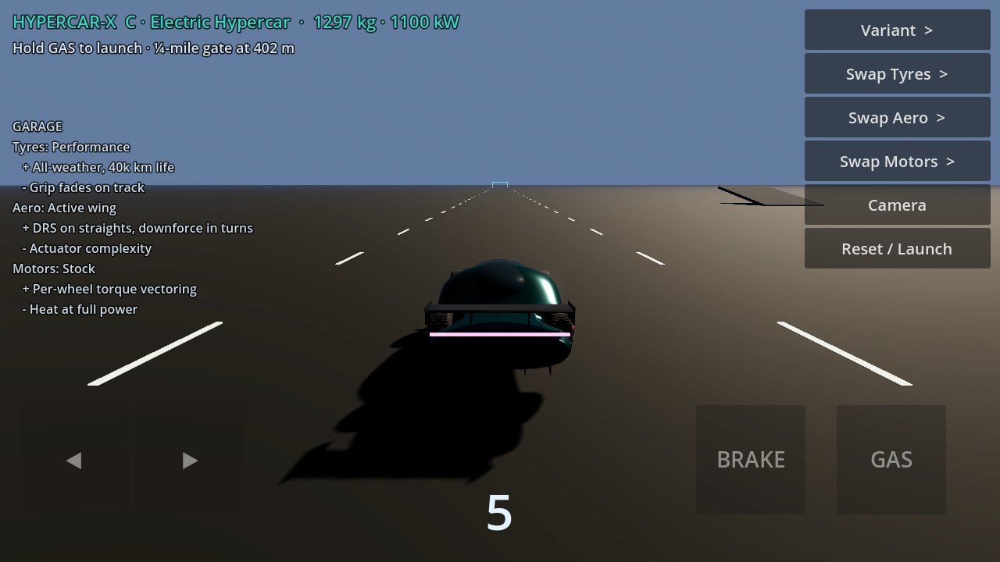
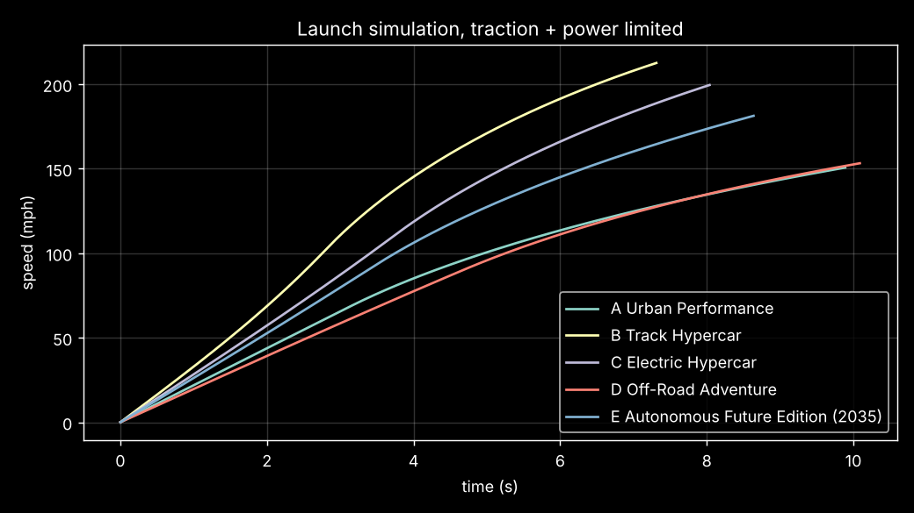
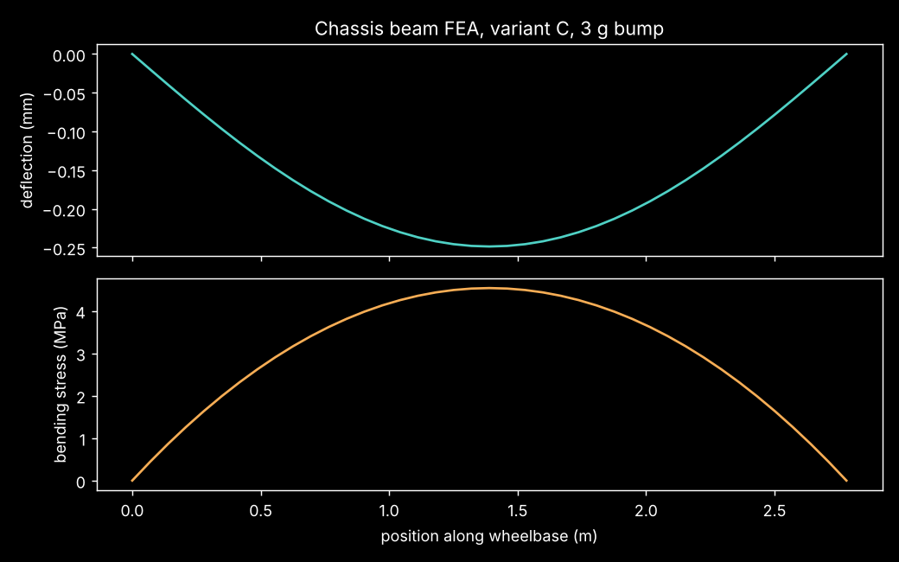

1,100 kW quad-motor platform. Modelled, textured and animated in Blender, simulated in Python, drivable in your browser and on Android.
Every number below comes from the parametric Python model and is regenerated by CI on each push.
Studio, road, detail, exploded and clay renders. Click any image to enlarge, then use the arrow keys or swipe.
300-frame rigged animation: rear squat on launch, nose dive and air-brake wing under braking, steering and body roll, tracked by a depth-of-field camera.

Uses the Blender-baked model with VehicleBody3D physics fed by the engineering model. In-app it does 0-60 in 2.5 s, the ¼ mile in 8.35 s and tops out at 343 km/h, against the model's 2.10 s, 8.07 s and 343 km/h. Touch pads, a garage with pros and cons for every part, a ¼-mile gate, slalom, handling ring and jump ramp.
Apps are rebuilt automatically by GitHub Actions whenever the Godot project changes.
Three.js, garage with swappable parts, five variants, works on phones.
Godot 4.3 app with touch controls. Open it on your phone and allow "install unknown apps".
Unzip and run HypercarX.exe. Keyboard: WASD or arrow keys.
Animated 17-slide review: physics, FEA, materials, variants, risks.
Rigged, animated model with procedural materials (Blender 5.2).
3.7 MB with baked diffuse, roughness and normal maps. Ready for game engines.
15 PBR maps: paint, carbon, tyre, rim, brake disc.
Python model, tests, Godot project, simulator, CI workflows.
Change any value in params.json and mass, CG, aero, launch, braking, suspension, FEA, range and cost all recompute.
| Metric | A Urban | B Track | C Electric | D Off-Road | E Auto 2035 |
|---|---|---|---|---|---|
| Mass (kg) | 1294 | 1139 | 1297 | 1520 | 1344 |
| Power (kW) | 450 | 1250 | 1100 | 620 | 800 |
| 0-60 mph (s) | 2.74 | 1.77 | 2.10 | 3.08 | 2.28 |
| Quarter mile (s) | 9.93 | 7.35 | 8.07 | 10.12 | 8.65 |
| 60-0 mph (m) | 36.3 | 22.9 | 27.6 | 40.0 | 30.1 |
| Lateral g @ 250 km/h | 1.12 | 3.20 | 1.86 | 0.95 | 1.57 |
| Range @ 100 km/h (km) | 624 | 392 | 757 | 509 | 1055 |
| Ride frequency (Hz) | 1.80 | 3.01 | 2.33 | 1.42 | 2.29 |
| Est. BOM (USD) | 156k | 244k | 243k | 175k | 282k |


Every option is a trade-off. Try them live in the simulator or the app.